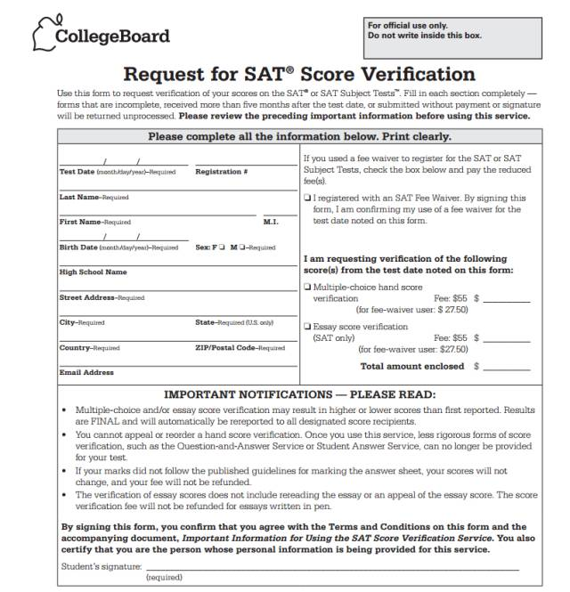

如果童靴们遇到这两种情况：分数太低我不服或者成绩被Delay，都是可以申请复议的。小编下面为大家讲解SAT成绩复议的步骤。
1)下载申请表格
从官网链接上下载申请表格，邮寄到指定地点，申请完成。一共有三种联系方式：邮件、电话、寄信详情信息可以从这里找到Link: http://sat.collegeboard.org/contact。

2)支付费用
关于费用：
Multiple-choice score verification 单选题复议：
Hand score verification is the most rigorous level of score verification. As such, it overrides other forms of score verification. If you order hand score verification, you will no longer see the full My SAT Online Score Report and you will not have access to the Student Answer Service or Question-and-Answer Service for your hand scored answer sheet. When hand scoring of a multiple-choice score is requested, your entire answer sheet will be manually reviewed - you cannot request verification of scores for a single section on the SAT or just one of several SAT Subject Tests taken on the same date.
$55
Fee reduction available
Essay score verification 作文复议：
This verification determines whether there was an error made in the scanning or processing of the essay scores assigned by essay readers. If an error is found, your adjusted score is automatically reported and your fee is refunded.
$55
Fee reduction available
复议费用介绍：http://sat.collegeboard.org/register/us-services-fees
3)等待复议结果
最后复议成绩会由CB寄出，只有在发现扫描错误或者算分错误时，费用才会退回，否则不可退费。当复议成绩确定后不可修改，此成绩也会送到所有收件人学校手中。
另外还有两点复议注意事项：
* 复议可能导致考生SAT成绩的上升也可能会下降，复议后的成绩也将会变成考生的最后成绩，邮给考生。所以如果不是对自己的考试有超级的信息，考生尽量谨慎复议;
* SAT考试成绩复议，如果成绩发生变化，那么复议费将退还，如果没有改变，将不退还复议费。